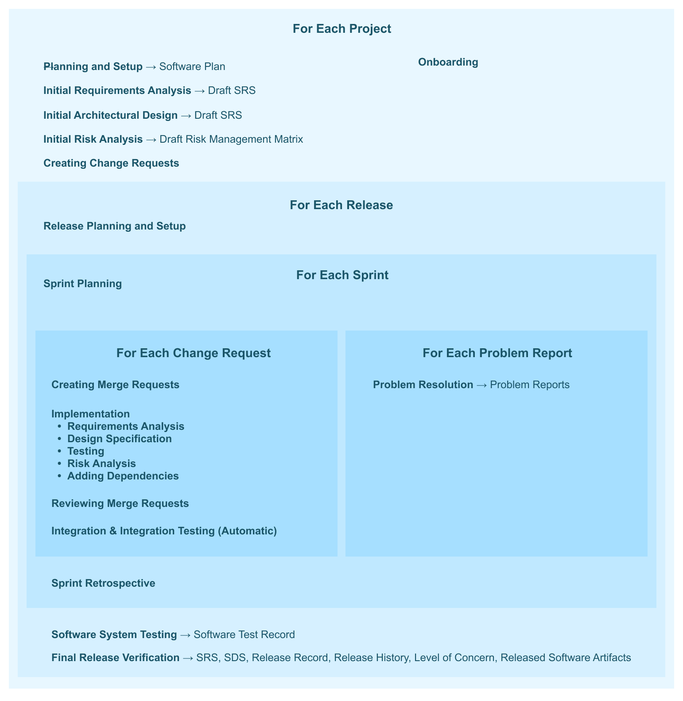

Software Plan
Contents
Software Plan¶
Purpose¶
This document for Radiotherapy AI Pty Ltd plans how the software in Radiotherapy AI Contour Recommendations will be designed, developed, and maintained. It identifies the deliverables, tasks, roles and responsibilities involved in these processes.
All software items in Radiotherapy AI Contour Recommendations are assigned a Class A software-safety class, which means no injury or damage to health could occur if the software fails [[62304:4.3.a]]. See RISK MANAGEMENT FILE for details.
[[Although it would be possible to assign different safety classifications to different software items, to keep the process simple, we simply assign the same classification to all of them. This classification fulfils 62304:4.3.b, 62304:4.3.c, 62304:4.3.d, 62304:4.3.e, 62304:4.3.f, 62304:4.3.g, and 62304:7.2.2.b]]
[[:In order to assist auditors and regulators, we have included section references to IEC62304:2006+A1:2015 as well as occasional comments throughout this document. These references and comments are always placed inside square brackets, and they are not present in the software-engineer version of the document. Other than these comments, the software-engineer version is identical to the auditor version of this document.]]
[[FDA-CPSSCMD:dev-environment]]
Scope¶
This document applies to the software in Radiotherapy AI Contour Recommendations.
Overview¶
Definitions¶
[[:Most of these definitions are very similar to IEC62304:2006+A1:2015’s definitions. However, they have been modified as appropriate for a better understanding by software engineers.]]
Activity – A set of one or more interrelated or interacting tasks. An activity has an input, an output, and verification tasks. Records of activity outputs must be available in case of an audit.
Change Request – A documented specification of a change to be made to the software system.
Configuration Item – An entity (e.g., compiler, software library, source code file, markdown document, Docker image, etc.) that can be uniquely identified using a particular version or Git hash.
Harm – The physical injury or damage of health of people (patients or users), or damage to property or the environment.
Hazard – A potential source of harm.
Hazardous Situation – A circumstance in which people, property, or the environment is exposed to one or more hazard(s). Not every hazardous situation leads to harm. Software is not itself a hazard because it can not directly cause harm, but software can contribute towards producing hazardous situations.
Known Anomaly – A problem report that we do not plan on addressing.
Problem Report – A record of actual or potential behavior of a software product that a user or other interested person believes to be unsafe, inappropriate for the intended use, or contrary to specification.
Public Release – A release that is made available to medical device users.
Record – A special type of document that states the results achieved or provides evidence that activities were performed. Unlike other documents—such as this software plan—records are not usually revised after being approved.
Release – A version of the software system which may or may not be ready to be made publicly available.
Risk – The combination of the probability of harm and the severity of that harm.
SOUP – Software of unknown provenance, also known as “off-the-shelf software”, is a software item that has not been developed for the purpose of being incorporated into the medical device and for which adequate records of the development processes are not available. Most software dependencies are SOUP, and thus the terms are sometimes used interchangeably.
Safety – Freedom from unacceptable risk. Note that it does not mean that there is no risk, as that is impossible. The perception of risk can depend greatly on cultural, socio-economic, and educational background, the actual and perceived state of health of the patient, and whether the hazard was avoidable. Our obligation as medical device software developers is to develop safe devices while also balancing economic constraints. A device that is never reaches the market can’t help patients.
Software Item – A module within the software system which may further decomposed into smaller software items. The software system is itself a software item, and thus the software items for a hierarchy. See the software design specification for a description of how the software system is decomposed into smaller software items.
Software Requirement – A particular function that the software must support or some other constraint that the software must fulfill. Requirements describe the what, while specifications and designs describe the how.
Software System – All of the software in the project. The software system is decomposed into software items.
Software Unit – A software item that is not further subdivided.
Task – The smallest piece of work that needs to be done.
Development Life Cycle Model¶
Radiotherapy AI Contour Recommendations will be developed using an agile software development life-cycle model inspired by AAMI TIR45: 2012/(R)2018, “Guidance on the use of AGILE practices in the development of medical device software” [[by “agile” we mean a combined evolutionary and incremental life-cycle model]]. Activities occur in four layers:
Project
Release
Sprint
Issue
Project-layer activities govern the entire project. Release-layer activities govern a particular release. A project consists of one or more releases. Some releases may be for internal purposes, while others are publicly available. Releases are organized using GitLab milestones. The sprint layer is used to organize releases into smaller sets of work. Sprints are organized by assigning software engineers to GitLab issues during Sprint Planning Meetings. Issue-layer activities govern a small piece of functionality or a problem report. Issues are organized using GitLab issues.
Activity inputs and outputs need not be in a consistent state in-between public releases, but all activity outputs must be consistent and verified for each public release during the Release - Final Verification activity. See Figure 1 for a diagram that includes the four layers, activities, and their outputs.

Roles and Responsibilities¶
The activities described in this document are designed for a team composed of a project lead and a team of software engineers. Role assignments are listed below:
Person |
Role |
|---|---|
Socrates |
Project Lead |
Socrates |
Software Engineer |
Plato |
Software Engineer |
Aristotle |
Software Engineer |
Wittgenstein |
Software Engineer |
Documentation Plan¶
Regulatory documents are stored, reviewed, and modified in the git repository, often alongside code changes [[62304:5.1.8.d]]. Here are the document deliverables that are produced for each release:
The Level of Concern document is written by the project lead based on the RISK MANAGEMENT FILE. It is reviewed by the project lead during the Release Verification activity.
The Software Requirements Specification, or SRS, describes what the software needs to accomplish. A first draft is written by the project lead during the Initial Requirements Analysis activity, and is finalized by the project lead during the Release Verification activity. Software engineers may clarify and extend the document during Issue Implementation.
The Software Design Specification, or SDS, describes how the software meets the requirements in the SRS. A first draft is written by the project lead during the Initial Architectural Design activity. Software engineers extend and improve it during Issue Implementation. It is reviewed for consistency by the project lead during the Release Verification activity.
Note that the Software Description and Software Architecture Chart documents, which are requested in the FDA’s 2005 “Guidance for the Content of Premarket Submissions for Software Contained in Medical Devices”, are both included as sections in the SDS.
The Release History record includes a list of change requests and problem reports addressed within a particular release. It also records all of the implemented changes and their verification via code reviews in the release. Finally, it lists all known anomalies present in the release. This document is generated from records extracted from GitLab merge requests and issues that are created during several activities, but most especially the Merge Request Review activity. The document is reviewed by the project lead during the Release Verification activity.
The Test Record describes a set of tests which were run, when, and by who. It also must include enough details to reproduce the testing setup. It is produced during the Software System Testing activity. There will be at least one such record produced for each release.
The Release Record records the verifications steps performed by the project lead during the Release Verification activity.
[[:This section fulfills 62304:5.1.8.a, 62304:5.1.8.b, and 62304:5.1.8.c]]
Development Standards¶
TODO: The project lead should keep an up-to-date list of development standards here (e.g., PEP8 on a Python project). If the software system’s safety classification is not level C (the highest), you may delete this section.
[[62304:5.1.4.a]]
Development Methods¶
TODO: The project lead should keep an up-to-date list of development methods here (e.g., Test Driven Development) if relevant. If the software system’s safety classification is not level C (the highest), you may delete this section.
[[62304:5.1.4.b]]
Development Tools¶
TODO: The project lead should keep an up-to-date list of development tools here, such as linters and versions. If the software system’s safety classification is not level C (the highest), you may delete this section.
To the extent possible, checking against these standards should be performed in an automated fashion (e.g., using a linter that is run on a Git-commit hook) [[62304:5.1.4]].
[[62304:5.1.4.c]]
Testing Plan¶
See the Verification and Validation Plan (VVP-001).
Configuration Management Plan¶
All source code and regulatory documents shall be kept within the git repository.
Most software projects have build-time or run time software dependencies that are not stored in Git. Each class of these dependencies must be identified in one of the following sub-sections [[62304:5.1.9.a and 62304:8.1.1]]. The versions of all configuration items shall be specified in files stored in this git repository [[this ensures we can retrieve the history of all configuration items using the git history, as needed per 62304:8.3 and 62304:8.1.3]].
TODO: The project lead should keep an up-to-date list of classes of configuration items here. A few example sections are listed below. This should include tools or settings used to develop the software.
[[62304:8.1.1, 62304:5.1.10]]
Hosting Dependencies¶
TODO: Write out the process that will be used to ensure AWS dependencies don’t change in an uncontrolled way; delete if irrelevant.
Server Python Dependencies¶
The backend server’s Python dependencies will be pinned in server/requirements.txt.
Frontend Compilation Dependencies¶
The system dependencies used to compile the application-specific static files from the frontend (e.g., the stylesheets and JavaScript files) are pinned in frontend/package.json and frontend/package-lock.json. Changes in these dependencies are relatively low risk since problems in the document creation process will be caught during system testing. These dependencies aren’t used during runtime.
To add frontend complication dependencies, use the npm package manager.
Frontend Runtime Dependencies¶
Some frontend runtime dependencies are compiled into our static files.
Others are loaded over CDNs. We only allow frontend dependencies to be loaded from other domains if subsource integrity is used. That is, the “integrity” HTML attribute must be present.
Common Defects Management Plan¶
TODO: identify categories of defects that may be introduced based on the selected programming technologies for this project [[62304:5.1.12.a]]
TODO: include an activity that produces evidence that demonstrates that these defects do not contribute to unacceptable risk [[62304:5.1.12.b]]
Risk Management Plan¶
TODO: reference your system-level risk management plan (note that a draft risk management plan is included in the initial set of RDM templates; this should be removed if it isn’t used):
Many risk-management activities are handled by a multi-disciplinary team and are described in the system-level process ___ [[62304:4.2]]. The risk management plan will be followed for the initial regulatory release and subsequent releases [[62304:6.1.c]]. Risk-management activities that require software engineering expertise and are best handled by during the day-to-day software development are described below.
Identification of new risk control measures to be implemented in software is handled at the system-level. New control measures are added as change requests and are verified and treated like any other new code [[62304:7.2.1, 62304:7.3.1, 62304:7.4.1.b, 62304:7.4.3]].
Activities¶
[[:This software plan does not explicitly separate the software development process, software maintenance process, configuration management process, problem resolution process, and software-related risk management because we are using an agile software development life-cycle, and thus the processes overlap with one another significantly. The activities described here fulfills 62304:4.2, 62304:5.1.1.a, 62304:5.1.1.b, 62304:5.1.6, 62304:5.1.7, and 62304:5.1.9.b as well as, software-related portions of 14971:3.4.a, 14971:3.4.b, 14971:3.4.c, 14971:3.4.e, and 14971:3.5]]
Project - Onboarding¶
Trigger: A new engineer begins working on the project
Performed by: The new engineer
Inputs: Not applicable
Tasks:
Documentation Review and Improvement
New project leads should read all documents in detail.
New software engineers should skim the current SRS and SDS and read the following sections of the software plan:
If you notice outdated information, typos, or opportunities for clarification, create a new merge request that addresses the issue.
Development Environment
Set up your development environment following the instructions in the README.
Git Hooks
If desired, run the
rdm hookscommand to install git hooks that will automatically add change request numbers to your git commit messages.Run Tests
Following the instructions in the project’s README, run all of the tests and confirm they’re passing. If they’re not passing, inform the project lead.
Update Person Directory
Add yourself to the
data/people.ymlfile. Include this change in your merge request.Discuss with Project Lead
Assign the merge request to the project lead. Write your questions in the description. Schedule a call if appropriate. Once approved, merge in the changes.
Outputs: Documentation improvements and role entry
Verified by: Project Lead
Verification tasks:
Verify Merge Request
Ensure the person is added to
data/people.yml. Ensure all of the suggested changes are appropriate.
Project - Planning and Setup¶
Trigger: Start of a new project
Performed by: Project Lead
Inputs: User needs and system requirements
Tasks:
GitLab Repository Setup
Set up a git repository on GitLab.
Configure GitLab to disable forced pushes. This ensures users can’t overwrite the project history.
Configure GitLab to only accept signed commits. Signed commits ensure that code changes can be traced back to the person who made the changes.
Configure GitLab to require merge-request reviews as appropriate. Consider using the CODEOWNERS file to ensure the proper reviewers review changes to particular files. E.g., perhaps the project lead will be the code owner of the software plan.
Create the following issue labels:
Bug
External-Review
Obsolete
Create a GitLab milestone that is named “icebox”. This milestone will be used to tag issues that may be included in future releases.
Consider adding a GitLab issue template to enforce the format for problem reports. See Issue - Problem Resolution.
Initialize Regulatory Documents
Install RDM and its dependencies. Initialize the regulatory templates using the
rdm initcommand.Configure RDM
Edit the default values in
config.yml,data/device.yml, anddata/workflow.ymlas appropriate.Refine Software Plan
Read through this software plan and modify it as appropriate. Use the audit notes to refer back to IEC62304:2006+A1:2015 to ensure your modifications are compliant.
Search through this document for the text “TODO”. Follow the instructions next to the “TODO” notes and delete the instructions once they’re addressed.
Outputs: The updated software plan document and the hosted git repository
Verified by: Project Lead
Verification tasks:
TODOs
Ensure all the outstanding TODOs in the software plan have been addressed.
Gap Audit
Compile the release version of the markdown documents (e.g., by running
make). Then run a gap audit to help ensure you’re complying with IEC62304:2006+A1:2015. For example, you may runrdm gap 62304_2015_class_b release/*.md. Address any gaps.Proof-Read Plan
Read through the software plan. Fix any typos. Correct any outdated information. Check that all the links work.
Activity Specification
Ensure each activity specification includes
the activity’s trigger events
which roles should perform the activity
its inputs
its tasks [[62304:5.1.1.a]]
its outputs [[62304:5.1.1.b 62304:5.1.6.a]]
who should verify the outputs
the verification tasks [[62304:5.1.6.b]] along with their acceptance criteria [[62304:5.1.6.d]].
Comments:
Keep this planning document up to date as the project commences [[62304:5.1.2]], and step through the verification tasks whenever there are process changes.
All software activity outputs will be stored in this git repository, the associated GitLab issues, or the associated GitLab merge requests, unless explicitly noted otherwise [[62304:5.1.1.b]]. Problem reports and change requests are stored as GitLab issues. A GitLab issue tagged with the bug label is a problem report. If a problem report outlines a set of requested changes, then it can simultaneously act as a change request. GitLab issues tagged with the obsolete label are ignored.
The software engineers working on the project are responsible for keeping all software activity outputs within version control at the times specified in the activity descriptions [[62304:5.1.9.c, 62304:5.1.9.d, and 62304:5.1.9.e]].
Also, document how the software can be reliably delivered to the point of use without corruption or unauthorized change [[62304:5.8.8]].
Project - Initial Requirements Analysis¶
Trigger: Start of a new project
Performed by: Project lead with the product owner
Inputs: User needs, system requirements, and risk control measures
Tasks:
Definitions
Add definitions for key terms and acronyms to the
data/definitions.ymlfile. Standard and concise definitions can clarify team communication quite a bit, much like good data abstractions can simplify a software project.Software Requirements
To the extent possible, major software requirements should be enumerated at the start of the project [[62304:5.2.1]].
Write requirements, following the Requirements Analysis Activity
Software requirements are often categorized as one of the following types [[62304:5.2.2 and 62304:5.2.3]]. It should help one identify key requirements:
a. Functional and capability requirements [[62304:5.2.2.a]]
- performance (e.g., the purpose of the software and timing requirements), - physical characteristics (e.g., code language, platform, operating system), - computing environment (e.g., hardware, memory size, processing unit, time zone, network infrastructure) under which the software is to perform, and - need for compatibility with upgrades or multiple SOUP or other device versions.
b. Software system inputs and outputs [[62304:5.2.2.b]]
- data characteristics (e.g., numerical, alpha-numeric, format) ranges, - limits, and - defaults.
c. Interfaces between the software system and other systems [[62304:5.2.2.c]]
d. Software-driven alarms, warnings, and operator messages [[62304:5.2.2.d]]
e. Security requirements [[62304:5.2.2.e]]
- those related to the compromise of sensitive information, - authentication, - authorization, - audit trail, and - communication integrity.
f. Usability engineering requirements that are sensitive to human errors and training [[62304:5.2.2.f]]
- support for manual operations, - human-equipment interactions, - constraints on personnel, and - areas needing concentrated human attention.
g. Data definitions and database requirements [[62304:5.2.2.g]]
h. Installation and acceptance requirements of the delivered medical device software at the operation and maintenance site or sites [[62304:5.2.2.h]]
i. Requirements related to methods of operation and maintenance [[62304:5.2.2.i]]
j. Requirements related to IT-network aspects [[62304:5.2.2.j@2015]]
k. User maintenance requirements [[62304:5.2.2.k]]
l. Regulatory requirements [[62304:5.2.2.l]]
m. Risk control measures
Software requirements that implement risk controls should be traced to their originating risk control [[62304:5.1.1.c and 62304:7.2.2.a]].
Outputs: Draft SRS
Verified by: See issue-layer activities
Verification tasks: See issue-layer activities
Project - Initial Risk Analysis¶
Trigger: Start of a new project
Performed by: Risk management team
Inputs: Draft SRS, Draft SDS, and other documents
Tasks:
Initial Risk Analysis
As described in the Risk Management Plan, perform an initial risk analysis taking into account the initial architectural design and software requirements [[62304:5.2.4]].
The resulting risk analysis must include identifiable hazards and hazardous situations so that software engineers can perform their risk analysis activities.
Share with Team
Once complete, link to the risk analysis in the software plan. Also, share the analysis with the software team.
Outputs: Risk analysis draft, including hazards and hazardous situations
Verified by: Not applicable
Verification tasks: Not applicable
Project - Creating Change Requests¶
Trigger: Need to record a chunk of development work
Performed by: Anyone on the project
Inputs: User needs and requirements
Tasks:
Write Change Request
There are many ways to divide requirements into change requests. Change requests that will be implemented in upcoming sprints should usually be made more granular, while change requests that may not be worked on for a while can be less granular.
Since change requests may be split up later and detailed requirements are added in an agile fashion, this activity allows minimal detail to be added to the change request. Sometimes even a title is sufficient.
Unless you’re the project lead, don’t assign the issue to a release. That will be handled during sprint planning. If, however, you know that the issue won’t be tackled in any of the current releases, feel free to add it to the icebox GitLab milestone.
Outputs: Change request in GitLab
Verified by: Not applicable
Verification tasks: Not applicable
Release - Planning¶
Trigger: The start of a new release
Performed by: Project lead
Inputs: User needs, Draft SRS, Draft SDS, and Problem Reports
Tasks:
Select Version Number
Each release shall have a version number.
TODO: add more details about project versioning here. E.g., you may want to follow semver.
Release Setup
Create the GitLab milestone for the release.
Start a New Release Record
Make a copy of the Release Record and Test Record templates and fill in as much detail as is appropriate; these will be filled in before the release is finalized.
Review Software Dependencies
If the release is public, determine if any software dependencies have become obsolete or should be upgraded. Also, review known anomalies in published anomalies lists as appropriate [[62304:6.1.f]].
Create change requests as appropriate.
Review Problem Reports
Consider outstanding problem reports in the backlog [[62304:9.4]]. Move problem reports into the current release as appropriate.
Review Trends in Problem Reports
You may skip this task for the first public release.
Look through historical problem reports and attempt to identify any adverse trends. For example, some software items may have many problem reports associated with them [[62304:9.6 and 14971:9.a]] or may have new or revised standards [[14971:9.b]]. Also, review past trends that were addressed in previous releases, as appropriate, and confirm the trends have been reversed [[62304:9.7.b]].
Create change requests as appropriate.
Review Risk Management File
Review RISK MANAGEMENT FILE for risk control measures that have not been implemented [[62304:7.2.2.c]].
Create change requests as appropriate.
Add Initial Change Requests
Coordinate with the product owner regarding which features should be included in the release. Create change requests for the major new features as appropriate.
Create change requests as appropriate.
Outputs: A partially completed release record and the set of change requests which should be implemented for the next release
Verified by: Project lead
Verification tasks:
Release Record
Be sure you’ve fully updated the new release record template.
Comments:
Feedback and complaints are gathered and stored in USER FEEDBACK. This information should incorporated into release planning [[14971:9, 14971:3.4.f, 62304:6.1.a, 62304:6.1.b and 62304:6.2.1.1]].
[[:This activity addresses 62304:6.3.1 since change requests resulting from maintenance and problem resolution are processed in the same manner in which risk control measures and feature change requests. Note that some releases are not public. The feedback collection activities are not included here because it is assumed that other processes will handle this. We also do not go into detail here regarding what criteria should be used to determine whether the feedback is considered a problem. Thus 62304:6.1.b, 62304:6.2.1.2, 62304:9.1.a, 62304:9.1.b, and 62304:9.1.c are handled elsewhere.]]
Sprint - Planning¶
Trigger: Usually every two weeks
Performed by: Engineering team during a call
Inputs: The list of change requests and work accomplished during the last week
Tasks:
GitLab Setup
Create a GitLab epic with an appropriate name, start date, and end date. This will be used to track which issues are going to be worked on in the current sprint.
Demonstrations
At the start of the meeting, each engineer presents a live demonstration of their progress. These demos allow the product owner to identify gaps, misunderstandings, or inconsistencies in the requirements. (Architectural design, construction, testing, etc., can better be reviewed in merge requests).
Keep the demonstrations short and appropriately high-level for their purpose. Prepare beforehand.
Assignments for Next Sprint
Once the demonstrations are complete, move on to the second part of the call.
Start by closing any change requests that are completed, as determined by the product owner.
Next, review new change requests and problem reports that have been added since the last sprint meeting. Assign the issues to the appropriate release or delete them.
Change requests that have not yet been assigned to a release have not yet been approved, and thus any work that implements these change requests should not be merged into main [[62304:8.2.1 and 62304:6.2.4]]. Being assigned to the current release means the product owner approves of the work.
Finally, assign change requests to be completed by each engineer during the following sprint. Add these change requests to the GitLab epic.
Process Retrospective
Finally, ask if there are any opportunities for process improvement. Typically there isn’t much time left to discuss in detail, so if large changes are proposed, it can be helpful to schedule a follow-up call.
Once a process change has been agreed upon, the project lead should update the software plan to reflect the new process.
Outputs: Closed change requests, change request approvals, change request assignments for the following sprint
Verified by: Not applicable
Verification tasks: Not applicable
Comments:
It’s critical that the product owner be present during most sprint planning meetings since they’re in the best position to review requirements and approve new change requests.
Issue - Creating Merge Requests¶
Trigger: Need to change documentation, code, or other files
Performed by: Whoever is making the change
Inputs: Varies depending on the change
Tasks:
Identify Change Request
All changes must tie back to a change request [[62304:8.2.1]]. Therefore, there should be a change request before you begin work.
Create Git Branch
Create a new git branch. The name should begin with the change request number, e.g.,
104-short-description. If you are working on multiple change requests at once, you can include both numbers in the name, e.g.,104-132-short-description.Create Git Commits
Create git commits of logically related sets of changes as you make progress [[62304:5.1.1.d, 62304:6.1.e and 62304:8.2.2]]. Write commit messages with varying levels of detail, as appropriate. Typically, early on in a project, when many changes are made quickly, thorough git commit messages are less worthwhile. As the project stabilizes (and especially after the first public release), commit messages become more important.
Here are some guidelines for writing commit messages:
Separate subject from body with a blank line
Use the body to explain what and why vs. how
Limit the subject line to 50 characters
Capitalize the subject line
Do not end the subject line with a period
Wrap the body at 72 characters
All commits should include a link back to the change request. E.g.,
Issue #104. Therdm hookscommand, which may have been set up as part of the onboarding activity, uses the numbers in the git branch name to pre-populate these. However, if you’re working on another change request within your current branch, that’s okay—just be sure to update the numbers.Push your commits to GitLab periodically to back up your work.
Create Merge Request
When work on the change request(s) is nearing completion, a GitLab merge request should be created for merging your git branch into the main branch. A brief summary of the changes should be included in the merge request description. These comments will be included in the release history record.
Assign Merge Request Reviewer
Once you’re ready for your changes to be reviewed, you must assign a reviewer to verify the changes. Select a reviewer (or multiple reviewers) as appropriate for the activities you performed. Each activity indicates who must verify the outputs. E.g., some activities require that the project lead be the reviewer.
Occasionally, due to the absence of other reviewers or due to an internal testing deadline, it may be necessary to skip the merge request review. When this happens, the engineer should justify why a review wasn’t necessary within the merge request comments or create a change request or a “TODO” to ensure verification occurs before the next release.
If, as is occasionally appropriate, someone outside of the core development team reviews a merge request, then mention who performed the review in the merge request body and tag the merge request with the
external-reviewlabel.Addressing Comments
It’s rarely acceptable to ignore comments entirely. This is disheartening to the reviewer. If you disagree with a suggestion, then make your case. If you think a refactor would make the code better but isn’t necessary, then make your case.
Once an issue is resolved, it’s best to “thumbs up” or write “fixed” in the comment that requested the change. Why is fixing the issue and pushing the change insufficient? Sometimes there is a mismatch between what the reviewer thinks is being suggested and what the author does to address the suggestion. In this situations one person may think they’ve addressed an issue while another person hasn’t.
If the merge request wasn’t approved, request a new review once the comments have been addressed.
Merging the Request
Merge the merge request into the main branch, resolving any conflicts that arise. Once the branch has been merged successfully, delete the branch in GitLab [[62304:5.1.5 and 62304:5.6.1]].
Outputs: Changes merged into the main branch
Verified by: Depends on the changes
Verification tasks:
Merge Request Message
Verify that the merge request’s message describes the changes.
Git Commit Messages Include Change Request Numbers
Verify that all of the git commit messages include change request numbers.
Git Commit Message Content
Verify that the git commit messages are appropriate (see comments above).
Comments:
This activity discusses the generic tasks involved with making any changes to the documents, code, or other files in the Radiotherapy AI Contour Recommendations repository. Depending on the changes being made, details from other activities will also apply.
Issue - Reviewing Merge Requests¶
Trigger: Assignment to review a merge request
Performed by: The reviewer
Inputs: The content of the merge request
Tasks:
Identify Activities Performed
Using the merge request description and the content of the changes, determine which activities were performed and which were performed partially or completely. If it’s unclear, ask the merge-request author for clarification.
Determine Appropriateness
Determine whether you’re an appropriate person to perform the verification. For example, if you’re verifying outputs for an activity that specifies the project lead should perform the verification, and you’re not the project lead, then request that the project lead perform the review.
Also, if you’re reviewing code that can lead to severe patient harm and you aren’t unfamiliar with the code or don’t have enough time to perform a necessarily thorough review, then request that someone else perform the review.
Perform Verification Activities
Step through the verification tasks for the performed activities [[62304:5.5.3]]. Record the tasks you perform in the review response. We recommend using a markdown checklist. Such a list may look like this:
- [x] Documents and implements software requirements - [x] Updates design specifications - [ ] Code construction follows the project standards - [ ] Unit, integration, or manual tests are updated - [ ] New sequences of events have been recorded
Most git hosts have features that let you save standard replies. We suggest using these.
It’s okay to skip some common and low-risk verification tasks in this list. For example, there’s no need to note that the “Git Commit Messages Include Change Request Numbers” verification task was performed for each commit.
Write Feedback
Write detailed feedback. Ask questions before making suggestions. Compliment good work!
One purpose of code reviews is to improve the team. and improving the team, while less direct, is often the most efficient way to improve the code and device’s safety. Many medical-device software projects extend over years; small improvements to the team can make a big impact. Thus, reviews should be partially about training. This is especially true when the reviewer is much more experienced with an activity than the author, but occasional in-depth conversations among equals can improve the team.
In addition to seniors teaching juniors and equals teaching each other, juniors can also learn by reviewing a senior’s code and asking questions. If you think the main purpose of reviewing code is to improve the code, then a junior engineer reviewing their senior may not feel the need to do in-depth reviews. This is not the case. You should ask questions about the code you don’t understand.
If comments will be useful long after the review, consider suggesting that they be added to the documentation or code comments.
You don’t always need to leave comments. Sometimes there is nothing to say. It can be helpful to distinguish the case where you were too busy to do an in-depth review from an in-depth review that didn’t result in any comments. In the latter case, it’s helpful to comment on what you reviewed and any questions you asked yourself.
If you’re surprised by a change, ask the author why they did something a certain way. Sometimes there’s a good reason you hadn’t thought of, but even when there isn’t, a Socrates-style sequence of questions can teach better than dictates. On the other hand, there’s not always time for dialectic.
Sign Off
If you’re satisfied with the changes, approve the merge request [[62304:8.2.4.c]]. If there are important changes that must be made before the code can be merged, indicate this.
Often the activity outputs will be incomplete. This often occurs since we’re using an agile methodology. All activity outputs will be reviewed during the final release verification activity. However, if there are incomplete activity outputs, be sure they’re recorded either as “TODO” comments within the repository or as new change requests within the current release.
If the suggested changes are low-risk, it’s okay to approve the merge request before the author implements them. This avoids another round-trip of approvals for a small change.
Outputs: Merge-request review
Verified by: Not applicable
Verification tasks: Not applicable
Issue - Implementation¶
Trigger: Working on an assigned change request during a sprint
Performed by: The engineer assigned to the change request
Inputs: The change request and the system architecture
Tasks:
Note that these tasks do not need to be performed in the order they’re presented. Often the design emerges during code constructions. Also, gaps in the requirements may not be clear until you begin coding. However, for bigger issues, it’s usually best to document the requirements and design first. We also recommend writing some tests first, or at least plan how you will write them first, since doing so often leads to better designs.
Requirements Gathering
Perform the Issue - Requirements Analysis activity as appropriate.
If the requirements are very uncertain, have the product owner review them before spending too much time on the design or construction.
Design Specifications
Perform the Issue - Design Specifications activity as appropriate.
If you’re new to the project or are uncertain about the design, consider having the project lead or another engineer review your design up-front.
Risk Analysis
Perform the Issue - Risk Analysis activity as appropriate.
Testing
Perform the Issue - Testing activity as appropriate.
Construction
During code construction, as appropriate:
Follow development standards and methods specified earlier in this plan.
Analyze how your changes affect the entire software system and consider whether any software items should be refactored or reused [[62304:6.2.3]]. Create “TODO” statements or change requests as appropriate.
Consider whether any external systems that the software system interfaces with may be affected [[62304:6.2.3]].
If the software has been released, consider whether data on existing systems needs to be migrated.
Outputs: Code and documentation changes
Verified by: Another engineer
Verification tasks:
Requirements
Complete verification tasks in the Issue - Requirements Analysis activity, as appropriate.
Design Specifications
Complete verification tasks in the Issue - Design Specification activity, as appropriate.
Risk Analysis
Complete verification tasks in the Issue - Risk Analysis activity, as appropriate.
Testing
Complete verification tasks in the Issue - Testing activity, as appropriate.
Construction
Ensure the code follows the project’s software standards if any.
Comments:
[[:This activity addresses 62304:5.5.1]]
Issue - Requirements Analysis¶
Trigger: Adding or planning for new features with undocumented or changed requirements
Performed by: Engineer implementing, or planning for, the change
Inputs: Vague or partially specified requirements in the change request or knowledge of the user needs
Tasks:
Evaluation
Is it necessary to write any new requirements [[62304:5.2.5]]?
Writing software requirements is an art and a science; one must find a balance between precision and utility. If you’re writing a set of requirements and it feels like a waste of time, some of them may not be necessary, or they may be too detailed.
Write the Software Requirements
Add the requirements to SOFTWARE REQUIREMENTS SOFTWARE.
The distinction between software requirements and design specifications can be challenging.
Requirements should:
not imply solution
be verifiable
be short, ideally one sentence.
Design specifications, on the other hand, should:
be one of, possibly, many solutions
be detailed.
Tie to System Requirements
This project, being software as a medical device, has no system requirements [[62304:5.1.3.a 62304:5.1.3.b 62304:5.2.6.a 62304:5.2.6.f]].
Outputs: Updates to SOFTWARE REQUIREMENTS SOFTWARE
Verified by: Project owner
Verification tasks:
Content Correctness
The product owner (and really the end-users) is best positioned to validate that the requirements are correct. This verification should occur during the weekly sprint planning meetings.
Regardless, it’s worth reviewing the change request and ensuring that the requirements documented in SOFTWARE REQUIREMENTS SOFTWARE are consistent with your understanding.
Formal Correctness
Review the documented requirements, ensuring they
balance completeness with utility
don’t contradict each other [[62304:5.2.6.b]]
have unambiguous descriptions [[62304:5.2.6.c]]
each has a unique identifier [[62304:5.2.6.e]]
are stated in terms that permit the establishment of test criteria and performance of tests to determine whether the test criteria have been met [[62304:5.2.6.d]].
Issue - Design Specifications¶
Trigger: Software items are added, removed, or their architecture is modified
Performed by: Engineer implementing, or planning for, the change
Inputs: The existing architecture, risk analysis, and requirements
Tasks:
Determine Architectural Design
Determine the architectural changes needed to meet the new requirements. Keep in mind the existing architecture and risks associated with the change.
Are you adding new software items or just changing existing items? Are you removing anything?
Evaluation Need for Documentation
Is it necessary to document anything? Typically the high-level “why” questions are the most important to document, as they’re not usually represented in the code. If you are making small changes or if there is nothing useful to document, then you can skip this activity.
Update the Architectural Diagrams
Prefer block diagrams and flow charts to textual descriptions and include these diagrams in the SDS. Indicate which software items are SOUP.
We’re using the C4 Model on this project. See
regulatory/model.c4for details. Several images, stored intmp/architecture, are generated from this file using Structurizr. There is a [useful online-editor] (https://structurizr.com/dsl) that can be used to more conveniently modify this file.Show the software and hardware interfaces between the software items and external software [[62304:5.3.2]].
Add a Section to the SDS
Textual descriptions are often necessary in addition to architectural diagrams. These detailed designs should be stored as closely as possible to their corresponding source files. (The
rdm collectsubcommand can pull comments from source files into YAML so they can be included in the SDS.)Include detailed descriptions if they seem useful.
User Interface Design
If you’re making large changes to the user interface, you need to first create user interface mockups. Don’t begin implementing the changes until the product owner has approved the user interface mockups.
If you’re modifying an existing UI, consider updating the mockup first.
Include the UI mockups in the SDS as appropriate.
Outputs: Updates to SDS
Verified by: Another engineer
Verification tasks:
Evaluate SDS
Ensure software architecture documented in the SDS:
is not more complicated than it needs to be to meet the requirements
is free from contradiction with the SDS [[62304:5.4.4.b]].
implements system and software requirements [[62304:5.4.4.a 62304:5.3.6.a]].
is able to support interfaces between software items and between software items and hardware [[62304:5.3.6.b]].
is such that the medical device architecture supports proper operation of any SOUP items [[62304:5.3.6.c]].
Issue - Risk Analysis¶
Trigger: Software items are added, removed, or their architecture is modified
Performed by: Engineer implementing, or planning for, the change
Inputs: The design specification and system-level risk analysis
Tasks:
Identify Existing or New Hazardous Situations
Can the software modules being worked on contribute to any of the hazardous situations listed in RISK MANAGEMENT FILE?
Can you think of hazardous situations that are not listed? If so, record them in SOFTWARE RISK MANAGEMENT FILE.
[[62304:7.1.1]]
Document Sequences of Events
If any hazardous situations were identified in the previous step, then record any sequences of events that may lead to those hazardous situations in SOFTWARE RISK MANAGEMENT FILE [[Fulfills 62304:7.1.4 and 62304:7.1.5, and also fulfills 62304:7.3.2 and 62304:7.4.1.a, since risk control measures are created with the same process. Note that although IEC 62304 distinguishes between sequences of events leading to a hazardous situation and software causes of a hazardous situation, we consider the “cause” to mean the penultimate event in the sequence and hence don’t distinguish them in our documentation.]].
When enumerating sequences of events leading to hazardous situations, consider:
incorrect or incomplete specifications of functionality [[62304:7.1.2.a]]
software defects in the code being added or modified [[62304:7.1.2.b]]
failures or unexpected results from new or existing dependencies [[62304:7.1.2.c]]
hardware failures [[62304:7.1.2.d]]
other software defects that could result in unpredictable software operation [[62304:7.1.2.d]]
reasonably foreseeable misuse [[62304:7.1.2.e]]
unreliable network connections
cybersecurity vulnerabilities
interference with existing risk control measures documented in RISK MANAGEMENT FILE [[62304:7.4.2]]
Only be as detailed as is useful for improving the software.
Outputs: Updates to SOFTWARE RISK MANAGEMENT FILE
Verified by: Another engineer
Verification tasks:
Review Completeness
Consider whether all relevant sequences of events were captured. Also, review that the granularity of the sequences of events is appropriate.
Review Traceability
Confirm that the software item, sequences of events, hazardous situation, and risk control measures can be traced together [[62304:7.3.3.a, 62304:7.3.3.b, 62304:7.3.3.c, and 62304:7.3.3.d]].
TODO: add a template document for the software risk management file
Issue - Writing Tests¶
Trigger: Requirements are added or changed, the risk analysis changes, verifying the fix for a problem report, or as needed
Performed by: Engineer implementing a change
Inputs: The requirements and risk analysis or the problem report
Tasks:
Evaluate Test Type
Review the Testing Plan. Determine what types of tests are appropriate for the changes you’re making.
Implement Tests
Implement tests as appropriate. Ensure they’re passing [62304:5.5.5, excluding documenting the result which is handled elsewhere]].
TODO: add more details about testing requirements here
Traceability
Each requirement must have at least one test to verify it.
Outputs: Tests
Verified by: Another engineer
Verification tasks:
Evaluate Completeness
Evaluate whether the requirements are covered by the new tests.
Evaluate Utility
Evaluate whether the tests will be overly fragile. Ensure they’re not too slow.
Issue - Adding Dependencies¶
Trigger: Incorporating a new dependency, or SOUP Software Item, into the software
Performed by: Engineer adding the dependency
Inputs: Details regarding the dependency
Tasks:
Evaluation
Most software dependencies introduce risks. Before incorporating new dependencies, consider the following questions:
Is the dependency strictly necessary? How much effort would it take to implement the provided functionality?
How widely used is the SOUP? Popular libraries tend to have fewer defects, better documentation, and longer lifetimes. Consider package download counts, issue tracker traffic, and GitLab stars, etc.
Is the library maintained? Consider the git commit frequency and the number of maintainers.
What is the project’s license? Be sure it’s compatible with the business needs.
Update Architectural Diagram
Incorporate the new SOUP item into the SDS Documentation as appropriate. The benefit to engineers, especially new engineers, should be balanced with the cost of maintaining the diagrams and the risks associated with outdated diagrams. See the Project - Architectural Design for details.
Update SBOM
Information in the
soup.yamlfile may duplicate information found in other files (e.g.,requirements.txtorpackage.json).Sometimes, especially when working on software items with low levels of concern, it can be appropriate to lump a few SOUP packages into a single item within the SBOM file.
The
soup.yamlshould contain a sequence of mappings, each containing the keys in parenthesis below. Some keys are optional. All values must be strings.The header of each sub-section contains the
titleof the SOUP [[62304:8.1.2.a]].The
manufactureris the name of the company that developed the SOUP. The lack of a manufacturer field is taken that this SOUP was developed collaboratively by the free open-source software community, and Radiotherapy AI Pty Ltd is considered the manufacturer [[62304:8.1.2.b]].The
versionof each SOUP is a unique identifier, which specifies the version of the SOUP which is used in the software [[62304:8.1.2.c]]. The version may follow varying formats, such as1.0.13,1.2r5, or even2021-05-05, as appropriate.
Outputs: Updated architecture diagram and SBOM
Verified by: Another engineer
Verification tasks:
Completeness
Review the updated architecture and SBOM changes. Are they sufficiently complete?
Formatting
Review the updated architecture and SBOM changes. Are they formatted correctly?
Issue - Problem Resolution¶
Trigger: You’re assigned a problem report
Performed by: Engineer
Inputs: The problem report
Tasks:
Investigate
Investigate the problem and, if possible, identify the cause and record it in the problem report [[62304:9.2.a and 62304:9.2.c]]. If possible, also note which software items were involved.
Risk Assessment
Evaluate the problem’s relevance to safety using the software risk assessment activity and record the result in the problem report [[62304:6.2.1.3, 62304:9.2.b, and 62304:9.2.c]].
Advise Relevant Parties
If the problem affects devices that have been released, make sure the appropriate people are aware of the situation and have enough information to decide whether and how to notify affected parties, including users and regulators—record who you notified in the problem report.
[[62304:9.3 62304:6.2.5.a and 62304:6.2.5.b details regarding who to inform and how they should be informed are assumed to be handled in other processes, and that all that the software engineers must do is pass along the appropriate details.]]
Fix or Defer
If there’s no need to fix the issue, either because it doesn’t impact safety or otherwise, record the rationale for not taking any action [[62304:9.2.d]]. Discuss with the project lead as appropriate. Note that unaddressed problem reports are included in most regulatory submissions.
If you do fix the issue, then create a merge request that fixes it. The GitLab issue that contains the problem report can also act as the corresponding change request.
If feasible, include an automated test that fails prior to the fix and passes after the fix. If not feasible, record how it was verified that the problem was resolved. Also, be sure the merge request references the problem report [[62304:8.2.4.a and 62304:8.2.4.b]].
Outputs: Completed problem report and either a fix or justification as to why a fix was unnecessary
Verified by: Another engineer
Verification tasks:
Problem Report Format
If the problem is present in released medical devices or there is no plan on fixing the problem, then confirm that the problem report is formatted correctly. Also, check that it includes the cause, risk assessment, and justification as to why the issue wasn’t fixed, as appropriate. If the problem was found before it was released and we fixed it, there’s no need to write out all of the details.
Comments:
[[:This activity addresses 62304:5.1.1.e, 62304:6.1.d, 62304:6.2.2, and 62304:5.8.2]]
Release - Software System Testing¶
Trigger: Need to create a software system test record
Performed by: An engineer
Inputs: The build artifacts to test
Tasks:
Start Test Record
Copy
documents/test_record_template.mdand name it appropriately. (Usually, it makes sense to name test records after the release they’re testing.)Add your name to the test record [[62304:5.6.7.c and 62304:5.7.5.c and 62304:9.8.g]].
Add the date when you started the testing [[62304:9.8.f]].
Unit and Integration Tests
Although it’s usually impossible to run the unit and integration tests in a production environment, the test environment should match the production environment as closely as possible. The test record should describe the test environment and should be detailed enough to allow another engineer to re-run the tests [[62304:5.6.7.b and 62304:5.7.5.b]]. In particular, it should include the git commit hash for the state of the code that was built and tested [[62304:9.8.c]]. Dirty working environments aren’t allowed. Details about the SOUP versions should be completely recorded according to the SOUP Configuration Management Plan [[62304:9.8.c]]. Any relevant environment variables should also be included. Any testing tools [[62304:9.8.e]] or hardware should also be recorded [[62304:9.8.d]].
Run the unit and integration tests. Include the list of tests that were run and whether they passed or failed [[62304:5.6.7.a 62304:5.7.5.a]].
Manual System Testing
The manual tests will be run on a staging environment that is as similar to the production environment as possible. The test record should describe the staging environment and should be detailed enough to allow the tests to be re-run [[62304:5.6.7.b and 62304:5.7.5.b]].
Run the manual tests. Include the list of tests that were run and whether they passed or failed [[62304:5.6.7.a 62304:5.7.5.a]].
Reporting Test Failures
Any test failures shall be recorded as problem reports [[62304:5.6.8 62304:5.7.4.d]]. See the prepare problem report activity for details [[62304:5.7.2]]. If any merge requests are implemented in response to these problem reports, the tests must be re-run [[62304:5.7.3.a 62304:5.7.3.b]]. If it is deemed unnecessary to re-run some of the tests, the justification as to why shall be included in the test record [[62304:5.7.3.c note that the risk management activities for (c) will be handled as part of the unit implementation and testing activity]].
Completing the Test Record
Finish filling in the rest record. Be sure it records whether the overall test-run passes or fails according to the criteria listed in the Testing Plan [[62304:5.6.7.a 62304:5.6.4]].
Outputs: Completed test record and any problem reports
Verification tasks:
Review Test Record
Ensure the test record is completed correctly:
Check that all of the tests have been run.
Confirm that there is enough detail to recreate the test environment.
Confirm that the overall test-run result is consistent with the Testing Plan.
Comments:
[[:Note that we combine our integration and system testing into one activity. We presume that if our integration tests and system tests are passing, no new problems were introduced, per 62304:9.7.d. We also do not distinguish regression tests from tests used for new materiel; we run all of the tests for each release. Therefore, there is no explicit need for regression tests as required in 62304:5.6.6. If the test suite grows very long regression testing may be added in the future.]]
Release - Final Verification¶
Trigger: Need to create a public release
Performed by: Project lead
Inputs: Code and documentation changes since the last release
Tasks:
If deficiencies are found while performing this activity, create change requests to address them.
Release Verification
Complete these verification steps, filling in the release record that was started during the Release - Planning activity:
Search the codebase and documentation for the sequence “TODO” comments. Address any that must be fixed prior to this release. None of them need to be fixed for this release. Address any comments
Review change requests in GitLab. Check that all planned change requests have been implemented and integrated [[62304:5.6.2.a, 62304:5.6.2.b and 62304:9.7.c]]. If there are unimplemented change requests, either move them to the next release or implement them prior to continuing the release activity.
Review outstanding problem reports. Confirm that none of the known anomalies result in unacceptable risk [[62304:5.8.3, and 62304:5.8.4]]. Confirm that any problem reports that were fixed are closed [[62304:9.7.a]].
The outputs of each activity are in a consistent state [[62304:5.1.6.c, 62304:5.1.6.d, and 62304:5.8.6]].
The unit tests adequately verify the software units [[62304:5.5.2]]. If not, create a change request to write unit tests to fill the gaps.
The integration tests adequately verify the software system [[62304:5.6.5 and 62304:5.7.4.c]]. If not, create a change request to write integration tests to fill the gaps.
All software requirements can be traced to appropriate verification [[62304:5.7.4.a, 62304:5.7.4.b, 62304:5.7.4.d]].
Read through the SDS. Make sure it is accurate and appropriately complete. If not, create a change request specifying the gaps that need to be filled.
The Release History Document is up-to-date.
Build the Release Artifacts
Following the instructions in the README, build the release artifacts.
Integration and Testing
Follow the Release - Software System Testing activity and complete the test record [[62304:5.6.3, 62304:5.8.1, 62304:8.2.3]]. Verify that the test results meet the required pass/fail criteria [[62304:5.7.4.d]]. If anomalies are found, fix them and restart the release process [[62304:7.3.3.d 62304:5.8.1 62304:5.5.5]]].
Tag the Release Git Commit
TODO: fill in the versioning scheme for this particular project
Following the versioning scheme specified in the Configuration Management Plan, determine the correct version.
Tag the git commit that was used to build the release with this tag. (Note that the documents will be updated in a later commit.)
Archive the Release Build Artifacts
[[:This activity addresses 62304:6.3.2, since development releases and maintenance releases are treated equivalently]]
TODO: write out the details of where we will archive the build artifacts
The purpose of the archive is to provide a means to re-test problems that may occur in an old version of the software.
Archived releases shall be kept indefinitely.
Complete the Release Record
Sign and fill in the release record.
Compile the documents into PDFs.
Archive the Release Documents
[[:This section fulfills 62304:5.8.7.a and 62304:5.8.7.b; note that documentation and configuration items are archived automatically due to the fact that they are stored in the git repository.]]
Outputs: Archived software release artifacts, release record, and documentation
Verified by: Not Applicable
Verification tasks: Not Applicable